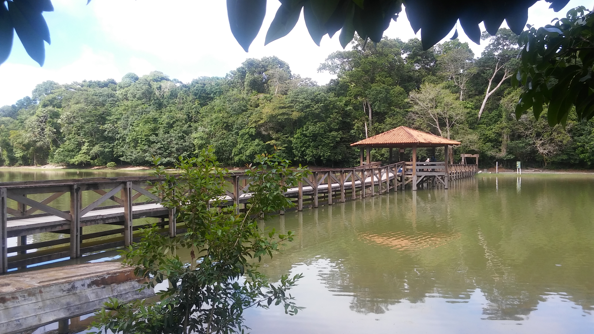
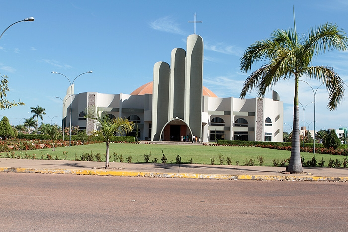
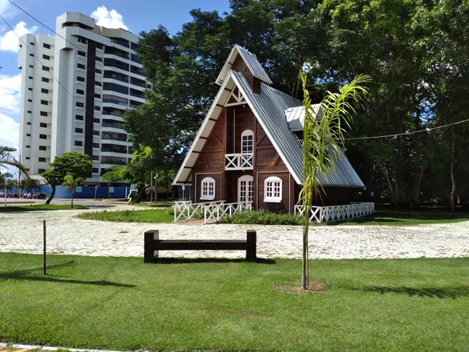
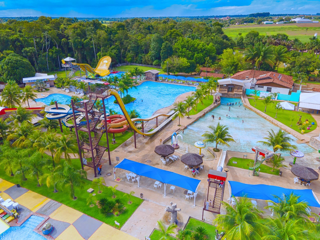
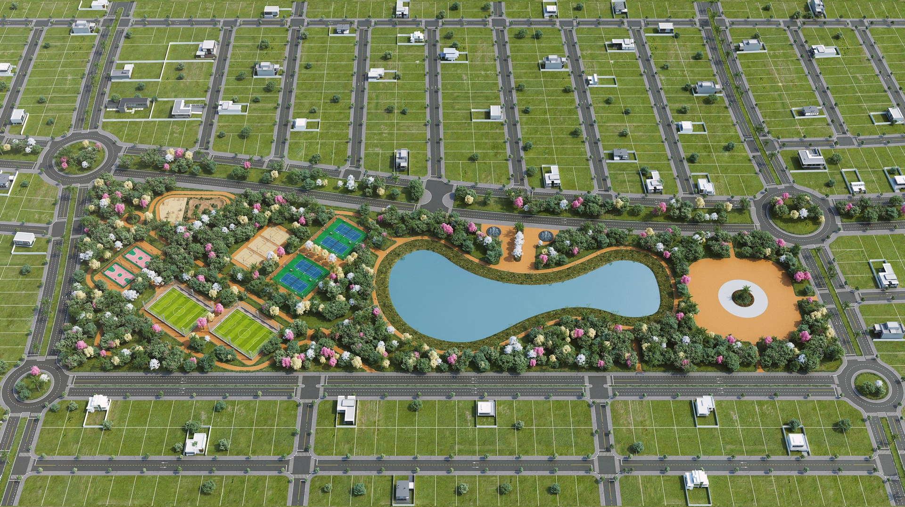
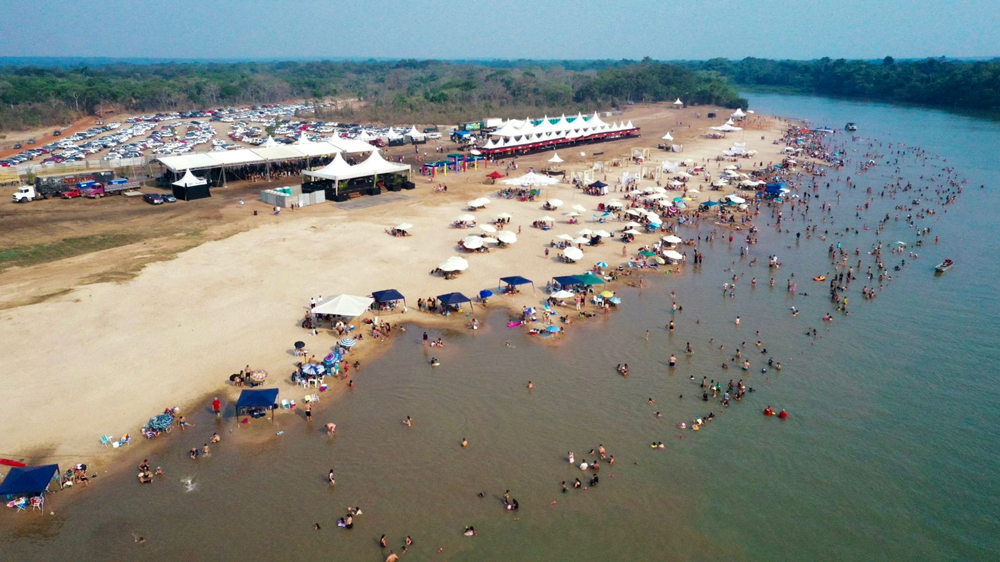
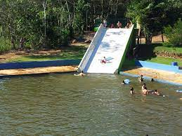
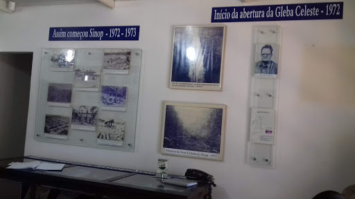
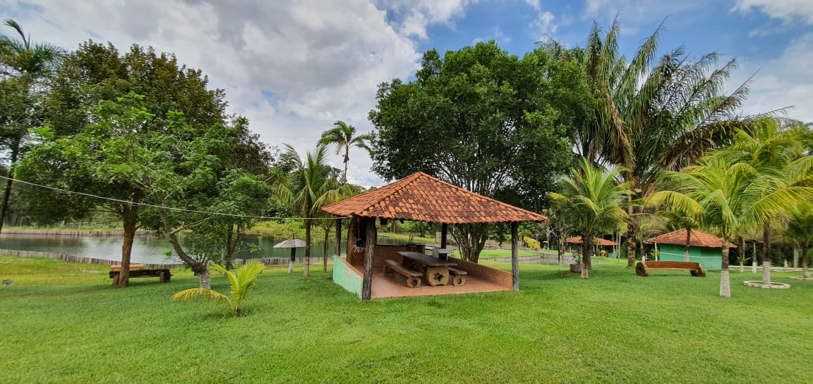

VOLTAR PARA O INÍCIO
PARQUE FLORESTAL

Endereço: R. das Orquideas, S/N - Jardim Primaveras, Sinop - MT, 78550-406
HORÁRIO DE FUNCIONAMENTO
HORÁRIOS:
SEGUNDA-FEIRA: FECHADO
TERÇA-FEIRA: 07:00 11:00, 13:00–17:00
QUARTA-FEIRA: 07:00 11:00, 13:00–17:00
QUINTA-FEIRA: 07:00 11:00, 13:00–17:00
SEXTA-FEIRA: 07:00 11:00, 13:00–17:00
SÁBADO: 07:00 11:00, 13:00–17:00
DOMINGO: 07:00 11:00, 13:00–17:00
FERIADOS: O HORÁRIO PODE MUDAR
Saiba mais
SHOPPING SINOP
Endereço: Av. Alexandre Ferronato, 800 - St. Industrial, Sinop - MT, 78557-247 Telefone: (66) 3300-0000
HORÁRIO DE FUNCIONAMENTO
HORÁRIOS:
SEGUNDA-FEIRA: 10:00 - 22:00
TERÇA-FEIRA: 10:00 - 22:00
QUARTA-FEIRA: 10:00 - 22:00
QUINTA-FEIRA: 10:00 - 22:00
SEXTA-FEIRA: 10:00 - 22:00
SÁBADO: 10:00 - 22:00
DOMINGO: 10:00 - 22:00
FERIADOS: OS HORÁRIOS PODEM SER DIFERENTES
Saiba mais
CATEDRAL SAGRADO CORAÇÃO DE JESUS

Av. Gov. Julio Campos – Praça da Catedral Postal640 CEP 78.550-286 – Sinop ? MT Fone: 3531 2433 Email: catedral.sagrado@hotmail.com
HORÁRIO DE FUNCIONAMENTO
HORÁRIOS:
SEGUNDA-FEIRA: 07:00 - 19:00
TERÇA-FEIRA: 07:00 - 19:00
QUARTA-FEIRA: 07:00 - 19:00
QUINTA-FEIRA: 07:00 - 19:00
SEXTA-FEIRA: 07:00 - 19:00
SÁBADO: 07:00 - 19:00
DOMINGO: 07:00 - 19:00
FERIADOS: OS HORÁRIOS PODEM SER DIFERENTES
Saiba mais
PRAÇA DA BÍBLIA

Avenida das figueiras, Sinop, Mato Grosso 78550-276 Brasil
CURUPY ACQUA PARK HOTEL

Endereço: Comunidade Nossa Senhora Aparecida - Estrada Adalgisa Chácara 181 - Zona Rural, Sinop - MT, 78559-899 Telefone: (66)99656-2410
HORÁRIO DE FUNCIONAMENTO
HORÁRIOS:
SEGUNDA-FEIRA: 08:00 - 17:00
TERÇA-FEIRA: 08:00 - 17:00
QUARTA-FEIRA: 08:00 - 17:00
QUINTA-FEIRA: 08:00 - 17:00
SEXTA-FEIRA: 08:00 - 17:00
SÁBADO: 08:00 - 17:00
DOMINGO: 08:00 - 17:00
FERIADOS: 08:00 - 17:00
Saiba mais
PARQUE AQUARELA BRASIL

Endereço: R. Tom Jobim, 600, Sinop - MT
HORÁRIO DE FUNCIONAMENTO
HORÁRIOS:
ABERTO 24 HORAS
Saiba mais
PRAIA DO CORTADO SINOP

Endereço: Sinop - MT, 78890-000
A praia é formada pelas areias do rio Teles Pires e está aproximadamente a 20 Km do centro da cidade
HORÁRIO DE FUNCIONAMENTO
HORÁRIOS:
ABERTO 24 HORAS
Saiba mais
BALNEÁRIO VALE DO SOL

Endereço: Estr. Ângela, 178 - Lot. Alto da Gloria, Sinop - MT, 78550-000 Telefone: (66) 99965-6436
HORÁRIO DE FUNCIONAMENTO
HORÁRIOS:
SÁBADO: 08:00 - 18:00
DOMINGO: 08:00 - 18:00
FERIADOS: OS HORÁRIOS PODEM SER DIFERENTES
Saiba mais
MUSEU HISTÓRICO DE SINOP-MT

ENDEREÇO: Av. das Embaubas, n° 991, no Centro de Sinop
HORÁRIO DE FUNCIONAMENTO
HORÁRIOS:
SEGUNDA-FEIRA: 09:00 - 18:00
TERÇA-FEIRA: 09:00 - 18:00
QUARTA-FEIRA: 09:00 - 18:00
QUINTA-FEIRA: 09:00 - 18:00
SEXTA-FEIRA: 09:00 - 18:00
Saiba mais
BALNEÁRIO DE LAZER DO VAL

Localização: Mato Grosso, Centro-Oeste, Brasil, América do Sul Endereço postal: Estrada Nanci, Sinop// Telefone: (66) 99955-2239
HORÁRIO DE FUNCIONAMENTO
HORÁRIOS:
SEGUNDA-FEIRA: 07:30 - 17:30
TERÇA-FEIRA: 07:30 - 17:30
QUARTA-FEIRA: 07:30 - 17:30
QUINTA-FEIRA: 07:30 - 17:30
SEXTA-FEIRA: 07:30 - 17:30
SÁBADO: 07:30 - 17:30
DOMINGO: 07:30 - 17:30
FERIADOS: OS HORÁRIOS PODEM SER DIFERENTES
Saiba mais
<
>